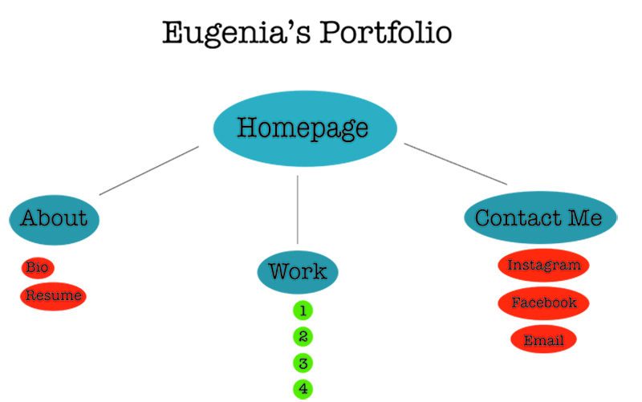

Site Proposal Questions
What is the purpose of the website?
The purpose of this website is to create an online portfolio to showcase my work, and to let viewers know who I am as a person and the type of work that I create.
Who is the intended audience?
My online portfolio is aimed to peers, teachers, potential future employers and everyone who is interested really.
What tone do you want for the site's written content?
The tone I am aiming for my website is a welcoming tone. Somewhat in between a casual yet professional tone. One that goes with my personality.
What will be the primary content of your site?
The primary content of my site will be a homepage that will show pictures of some of my works, and a brief overview of who I am, welcoming viewers to explore more of my site.
What will be the secondary content?
The secondary content of my site will have pages such as About, Work, and a contact me page. In the about page I will talk about myself, and my resume will be uploaded there. In the works page, I will have all of the projects and assignments that I have done at Parsons. At last in the contact me page there will be a link to my Facebook and Instagram as well as my email and phone number.
How will users navigate through your site?
Users will navigate through my site by using a navigation tan on the top left corner that will take them to each tab listed. There will be a return button at the bottom of each page, taking the user back to the secondary content page. In each page, once you click them, let’s say one of the works, there will be a button on the top right that will say next, that will take you to the next artwork. Or with the button on the left hand side, you can go to the previous work.
